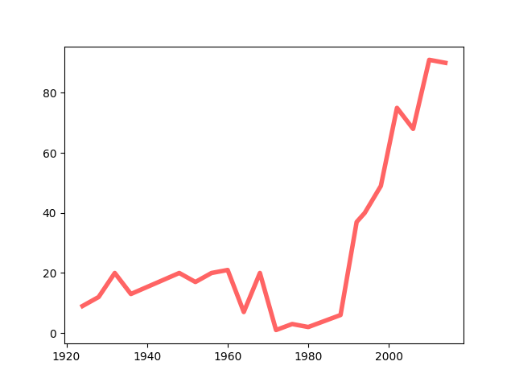
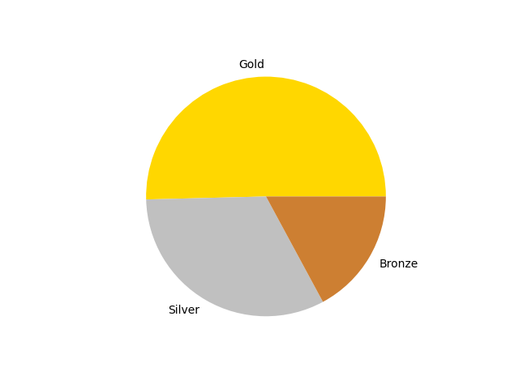
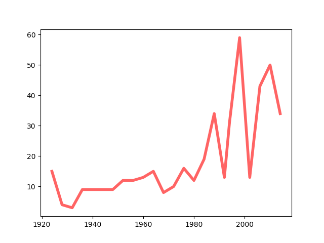
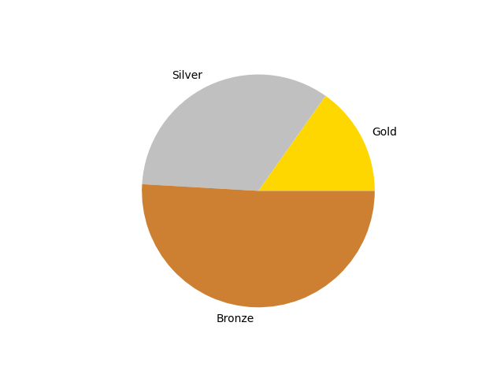
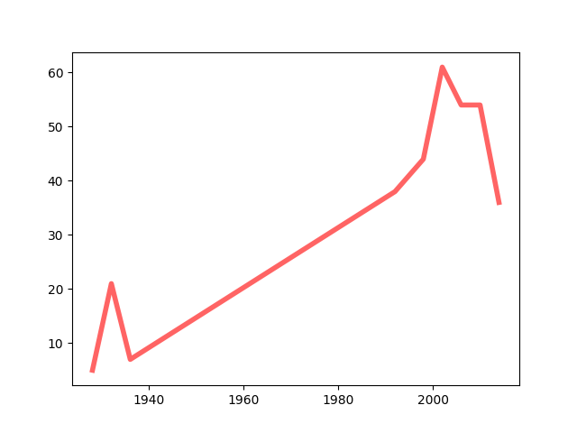
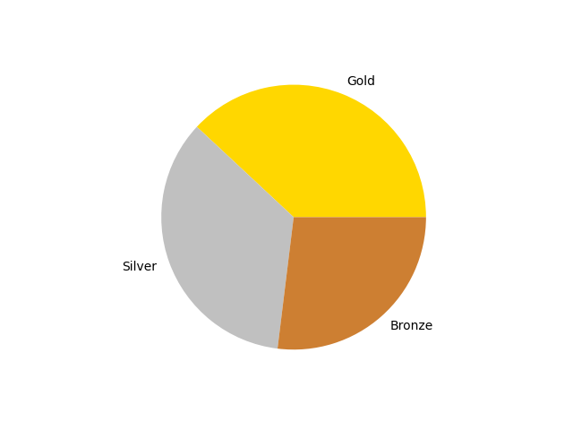

Data Analysis
Given below are the graphical representation of medals recieved (line graph) and the ratio (pie chart) of gold, silver and bronze medels for three countries in the Olympics between 1924 to 2014.
Charts for Canada
Canada
 Canada has recieved 315-Gold, 203-Silver and 107-Bronze medals with a total of 625 medals.
Charts for Finland
Finland
 Finland has recieved 66-Gold, 147-Silver and 221-Bronze medals with a total of 434 medals.
Charts for Germany
Germany
 Germany has recieved 137-Gold, 126-Silver and 97-Bronze medals with a total of 362 medals.